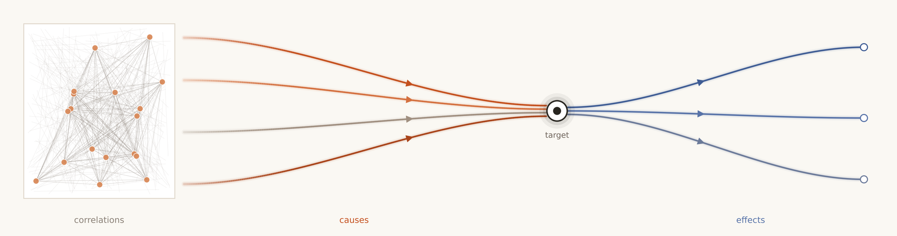
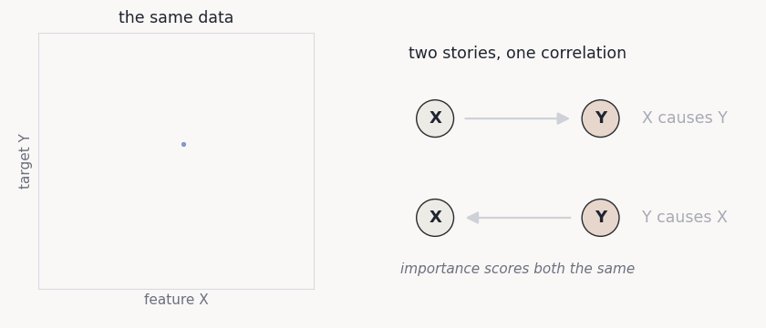
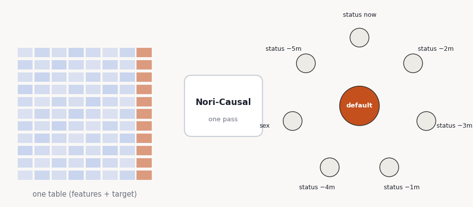
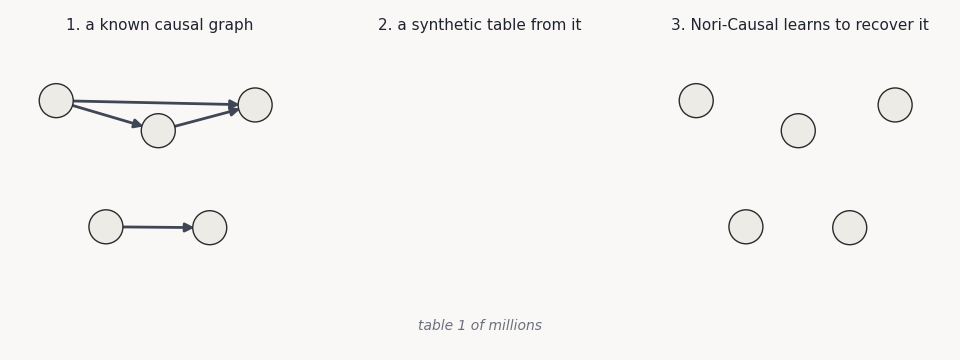
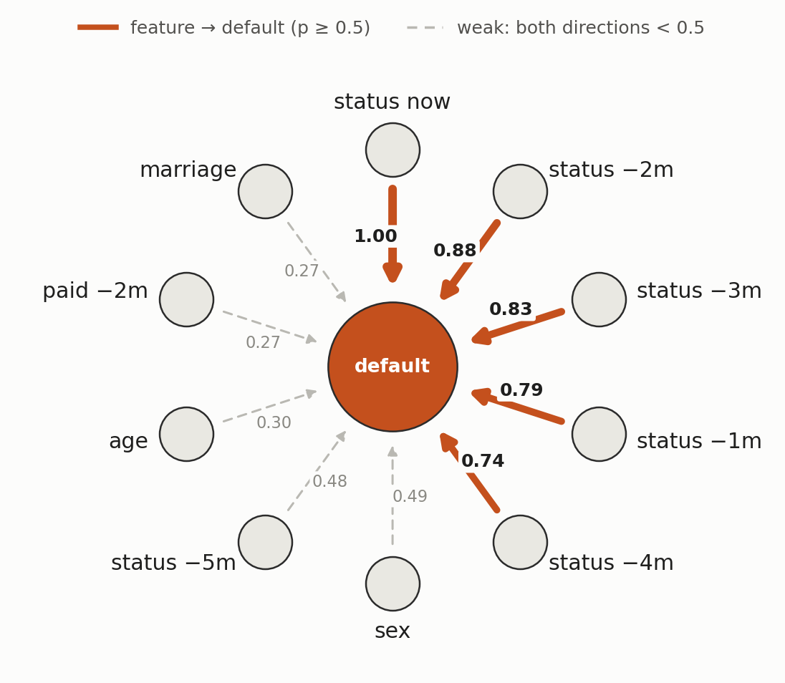
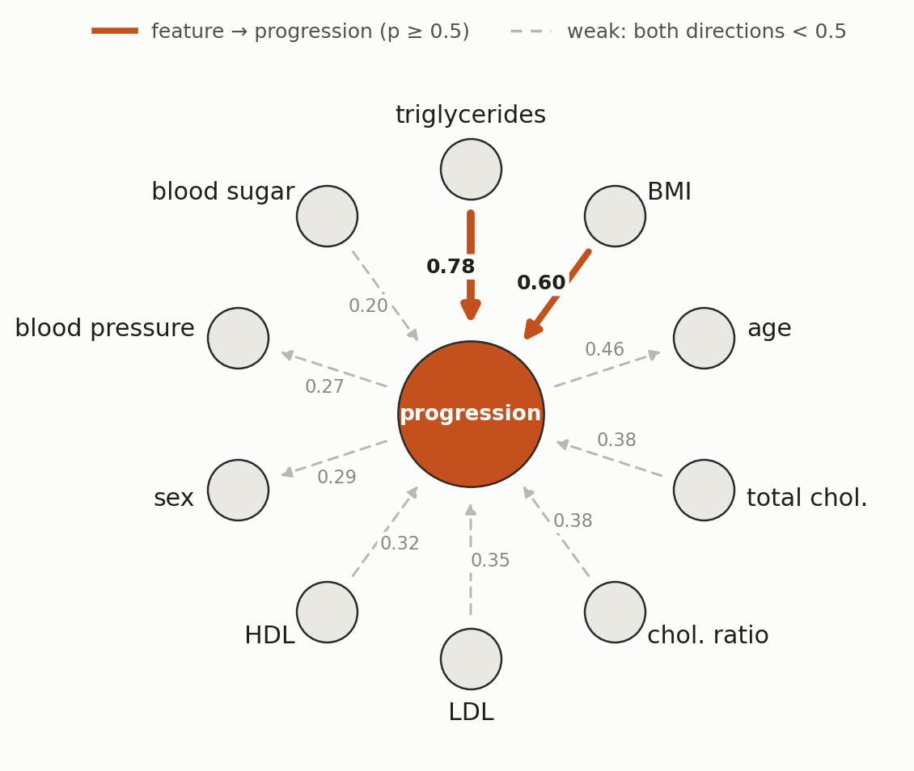

Introducing Nori-Causal: From What Matters to What Causes
Glass-box models show which features Nori relies on. Nori-Causal goes one step further: it tells you which features drive the target, and which are driven by it.

In our glass-box post, we showed how Nori can be distilled into simple, interpretable relationships between the target and the features: one readable curve per feature that you can check and defend. Now, we push this intuition forward with Nori-Causal, which shows what the causes and the effects of the target are.
The Problem
A glass-box model answers an important question: which features does the prediction depend on, and how? But a feature can be predictive for two very different reasons. It can drive the target, or it can be driven by it.
Consider credit default. Missed payments are a strong signal of an upcoming default. So are collection calls. Any predictive model, glass box or not, will rate both as important. But only one of them is a lever. Fewer missed payments lower the risk of default. Stopping the collection calls does not, because the calls are a consequence of the risk, not its source. Yet the data alone can look identical either way:

Almost every decision built on top of a model is an intervention: approve a loan, change a treatment, adjust a price. Before acting, we need to know which features are causes of the target and which are effects of it.
Fundamental Issues
Telling causes from effects using only a table is hard, for three reasons.
- Correlation has no direction. Accuracy, feature importance, and Shapley values all measure association, and association is symmetric. A feature that causes the target and a feature caused by the target can look identical to a predictive model.
- Real data has no answer key. Real tables never come with their true causal graph. The experiments that would reveal it are often slow, expensive, or unethical, so there is little to learn from or check against.
- There are too many possible graphs. Classical causal discovery searches over graphs or fits a new model for every dataset. With 5 features there are already 29,281 possible graphs, and with 10 there are about 4 × 1018. Most methods also rely on strong assumptions about the data.
Our Solution: Nori-Causal
Nori-Causal addresses these issues with the same recipe that makes Nori work: learn from synthetic data where the answer is known, then apply what was learned to real tables without any retraining.
How does Nori-Causal work?
Nori-Causal takes a table, with the target as one of its columns. In a single forward pass, it returns two probabilities for every feature: the probability that the feature is a direct cause of the target, and the probability that it is a direct effect. A feature for which both are low is neither. It also scores every pair of features, giving a map of the table's likely causal structure.
Like Nori, it is never trained on your data. There is no per-dataset search or fitting: the table goes through the model once, and the answer comes back in seconds.

How do we train it?
We use the same synthetic data engine that trains Nori. Every synthetic table is generated from a causal graph that we chose: a few columns are sampled first, and every other column is computed from its parents through random functions and noise. For Nori, the graph is only a means to an end. It produces realistic tables, and once a table is made, the graph is thrown away.
For Nori-Causal, we keep the graph. Because we chose it, we know exactly which columns cause which. This gives us what real data never has, an answer key, and we train Nori-Causal to recover it from the table alone.

Nori-Causal sees millions of these tables, each with its own graph, mechanisms, noise, and size. To do well across all of them, it cannot memorize any single dataset. It has to learn the general patterns in the data that reveal which way the arrows point. That is what lets it read a real table it has never seen. None of the real datasets below were used in training.
Case Studies
We now run Nori-Causal on two real tables. The graphs read the same way as above: the target sits in the center, solid arrows are at or above 0.5, and dashed arrows are weaker.
Credit Defaults
The UCI Credit Default table covers 30,000 card holders: their credit limit, demographics, and six months of repayment status, bills, and payments. The target is whether they defaulted the next month, coded as 1 for default and 0 otherwise.

In the glass-box post, the latest repayment status carried most of Nori's predictive signal. Nori-Causal now adds the direction: repayment history is a cause of default, not a consequence of it, which is what a lender needs to know before acting on it. Sex, age, and marriage stay below 0.5 in both directions, so Nori-Causal does not treat them as drivers.
Healthcare
The diabetes table follows 442 patients. Ten measurements are taken at baseline: age, sex, BMI, blood pressure, and six blood tests. The target is how far the disease has progressed one year later.

Triglycerides and BMI are also the two strongest known predictors in this dataset, and both are plausible drivers of diabetes progression. Nori-Causal names them as causes and does not commit to anything else.
The dashed arrows carry a lesson too. Age, sex, and blood pressure lean slightly toward being effects of progression, which cannot be right: they were measured a year before the outcome. Nori-Causal sees only the numbers, not what the columns mean or when they were recorded. This is why weak relations are drawn dashed, and why the scores are evidence to check, not conclusions.
Try Nori-Causal
Nori-Causal runs inside NoriInterpreter, next to the glass-box workflow:
from synthefy_nori.interpretability import NoriInterpreter
interp = NoriInterpreter(causal=True).fit(X, y)
interp.causal_ranking_ # per feature: p_cause, p_effect, importance
interp.plot_causal_graph() # the target-centred graph shown aboveFor a yes/no target such as default, pass it as 0/1 with task="regression". The weights download from the Hugging Face Hub on first use.
What It Can't Do Yet
- It gives probabilities, not a final graph. Turning scores into a decided set of causes is the next step.
- It reads numbers, not meaning. Column names such as "age" or "sex" already rule out some directions. Bringing that knowledge in with a language model is next on our list.
- It works with continuous and 0/1 targets. Targets with several unordered classes are not supported yet.